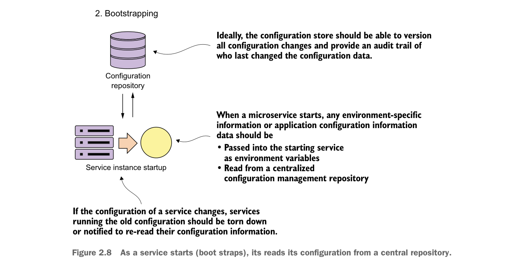

configuration of the application servers isn’t kept under source control and is managed through a combination of the user interface and home-grown management scripts. It’s too easy for configuration drift to creep into the application server environment and suddenly cause what, on the surface, appear to be random outages.
The use of a single deployable artifact with the runtime engine embedded in the artifact eliminates many of these opportunities for configuration drift. It also allows you to put the whole artifact under source control and allows the application team to be able to better reason through how their application is built and deployed.
2.4.2 Service bootstrapping: managing configuration of your microservices
Service bootstrapping (step 2 in figure 2.6) occurs when the microservice is first starting up and needs to load its application configuration information. Figure 2.8 provides more context for the bootstrapping processing.
As any application developer knows, there will be times when you need to make the runtime behavior of the application configurable. Usually this involves reading your application configuration data from a property file deployed with the application or reading the data out of a data store such as a relational database.
Microservices often run into the same type of configuration requirements. The difference is that in microservice application running in the cloud, you might have

As a service starts (boot straps), its reads its configuration from a central repository.